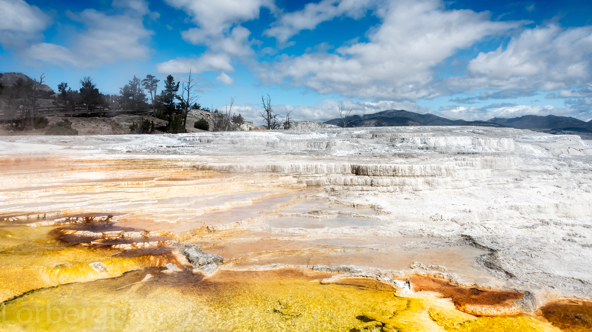

Sign up!Yellowstone National Park Bike Tour
A Yellowstone National Park bike tour is a otherworldly experience especially if you like wildlife, geysers and fabulous landscapes. This tour spends three days in the National Park and then 4 days in the lessor know, but still amazing Greater Yellowstone Ecosystem. We consider Day 7’s Bear Tooth Pass to be one of the top three climbs on any of our 30 bike touring itineraries!
Join the local experts at Lizard Head Cycling Guides as we explore the Yellowstone Country together and are challenged by some of North America’s most amazing cycling terrain.
Highlights
- Gallatin River Canyon
- Yellowstone National Park
- Old Faithful and Upper Geyser Basin
- Yellowstone Lake
- The old west town of Cody, Wyoming
- Chief Joseph Highway
- Beartooth Highway
Itinerary
- Day 0: Arrival in Bozeman
- Riders either drive to the meeting hotel (La Quinta Inn & Suites Belgrade / Bozeman Airport) in Belgrade, MT, or fly into Bozeman Yellowstone International Airport (BZN) and find their own shuttle to the meeting hotel.
- Day 1: West Yellowstone to Old Faithful
- After a morning shuttle from Belgrade to West Yellowstone, MT through the picturesque Gallatin River Canyon (‘A River Runs Through It’ was filmed here!), we start our ride from the West Entrance of Yellowstone National Park and begin our journey into the park, but keep a look out for the commonly sighted bison and elk, often right in the middle of the road! Also keep a keen eye for the more elusive grizzly bear, or perhaps even some wolves! This is wild and rugged terrain where wildlife abounds amid the beauty of Mother Nature and her geothermal wonders. We also urge you to stop at the many pullouts to take in the wonders of this magnificent place.
- Day 2: Grand Prismatic Spring to Shoshone Lake
- Today is a mix of riding and hiking within the Midway Geyser Basin to see some of the lesser known features of Yellowstone. Departing from Old Faithful in the early morning we ride west for a quick 7 miles to Grand Prismatic Spring and then take a 45 minute hike around this amazing and colorful geothermal feature. If the morning is cool enough, a surreal mist will surround the spring making for dramatic photo opportunities.
- After Grand Prismatic we re-mount the bikes this time heading back east past Old Faithful and to the Shoshone Lake Overlook. From here we put on the hiking shoes and hike about 10 miles out and back to the remote and completely undeveloped Shoshone Lake and the Shoshone Geyser Basin – truly a gem in the wilderness. But remember, this *is* the wilderness so be alert for wildlife! After our hike, it’s back on the bikes for a fast 10 mile ride back to the Old Faithful Snow Lodge to end the day.
- Day 3: Layover Day - Hiking/Optional Grand Loop Ride
- Today is a layover day at Lake Lodge and guests will have a number of hiking options within Yellowstone National Park. Of course you can also keep pedalingby taking on a big ride along the Grand Loop Road, or simply take a day off the bike to relax at the lodge. The choice is up to you, but we highly recommend some hiking to keep the legs loose and also to see some sights you simply will not see from the saddle.
- Day 4: Old Faithful to Cody, WY
- Today offers an epic day on the bike! After a hearty breakfast for the long day ahead, riders depart from the lodge, pedal towards and around Yellowstone Lake and exit Yellowstone National Park via the East Entrance. After some moderate climbing for the first half of the route, riders will enjoy a nearly 60 mile descent as we make our way along the North Fork of the Shoshone River, through the scenic Wapiti Valley, along The Buffalo Bill Cody Scenic Byway, past Buffalo Bill Reservoir to eventually make our way into the rustic western cowboy town of Cody, Wyoming. Wow! What a day!
- Day 5: Layover Day - Cody, WY
- Today is a layover day in Cody, Wyoming. There will be an optional ride offered today for those that want to keep up their daily pedaling. Other activities can include exploring the old western downtown area, attending a real western rodeo, exploring the Buffalo Bill museum of the west, hiking on nearby trails or simply relaxing.
- Day 6: Chief Joseph Scenic Byway
- Today offer possibly the most scenic riding of the entire week as we cruise along the Chief Joseph Scenic Byway and dip into Montana at the end of the ride. The standard plan is to start with a quick shuttle (to avoid less scenic riding) and drop cyclists on the climb of Chief Joseph Pass.
- For the E.F.I. rider today is certainly the “queen stage” of the week with over 8,000′ of climbing and a HC (beyond category) 10 mile climb to Chief Joseph pass.
- Of course there will be plenty of opportunities to “bump” ahead for those not wanting to put in all the miles or climbs allowing those riders to literally cherry pick the best of the best along today’s route.
- We will conclude the ride at Cooke City, Montana and check into the Soda Butte Lodge for the final night of our week-long adventure. It’s hard to believe that the week is almost over as we share one last dinner together in this truly wondrous place.
- Day 7: Beartooth Pass to Red Lodge, MT
- It would not be a classic Lizard Head tour without a classic ending… and today is the day! With an early morning start, we’ll take on the mighty Beartooth Highway and head northeast up to Beartooth Pass maxing out at nearly 11,000′ elevation. The climb is long and gradual and the views are amazing! As we past tree line on our ascent, we’ll ride past dozens of fresh water lakes sprinkled throughout the barren landscape where there is often snow pack at these altitudes year round.
- At the top of Beartooth Pass we’ll stop for lunch with 100+ mile views in all directions – it is truly spectacular! Post lunch will be a mind boggling 27 mile twisty descent to the town of Red Lodge, Montana… this is one ride you are certainly not going to forget. Upon arrival in Red Lodge, we end at Red Lodge Ales to toss back a few celebratory brews and then pack up to shuttle back to Bozeman to end the tour.
Dates
August 26 to September 1, 2018
Prices
$2,800 per person
Length
280 - 395 Miles
Difficulty
Intermediate to Advanced
https://lizardheadcyclingguides.com/road-mountain-bike-tours/summer-bike-tours/yellowstone-national-park-bike-tour/